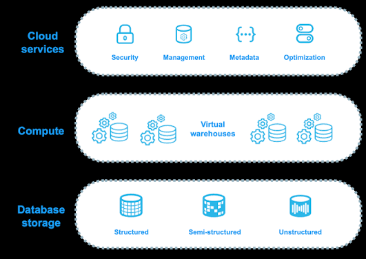

Certification Prep Portal
Select Your Examination
Databricks Lakehouse Interview / Exam Buzzword Cloud
Architecture
Delta Lake
Spark
Streaming
Governance
Performance
Machine Learning
Workspace
AI Engineering & LLM Architecture Buzzword Cloud
RAG Architecture
Inference & Infra
Eval & Guardrails
Optimization
Agentic Workflows
LLMOps
Vector Search
Snowflake Architecture

- Cloud Services Layer
- Compute Layer (Virtual Warehouses)
- Storage Layer (Micro-partitions)